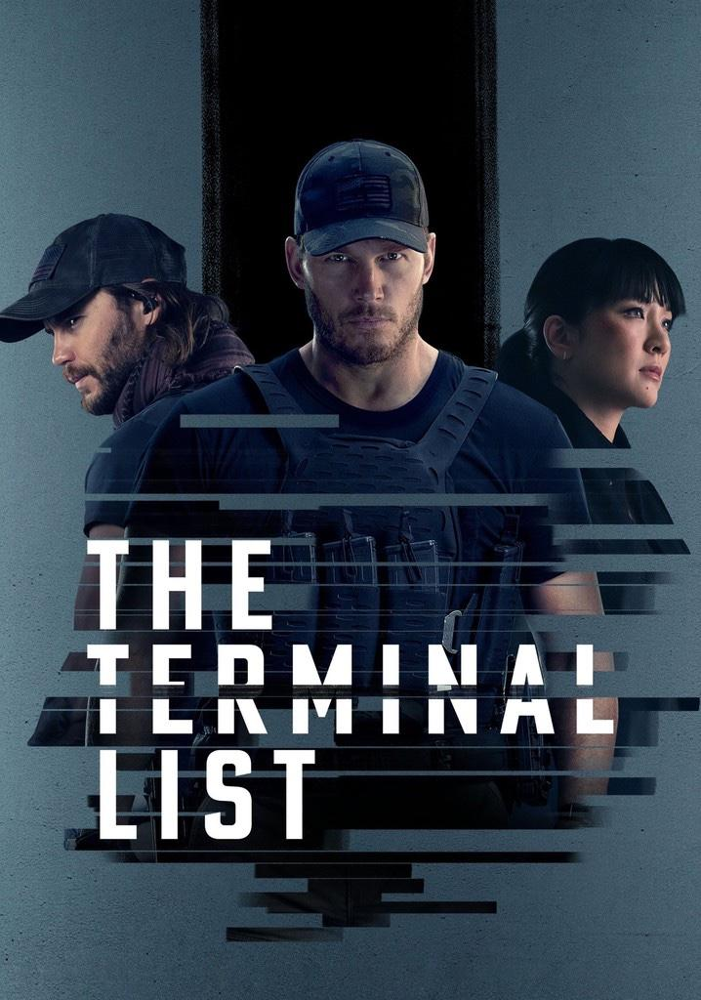

1) The Terminal List
This one is heavy from episode one. It drops you into loss, confusion, and a guy who is trying to figure out what really happened while everything around him keeps getting darker.
The best part is that you never feel fully safe about the truth. Some moments feel personal and emotional, and then suddenly it turns into something bigger with people in power doing ugly things behind the scenes.
If you like revenge stories mixed with conspiracy vibes, it will keep you hooked.
